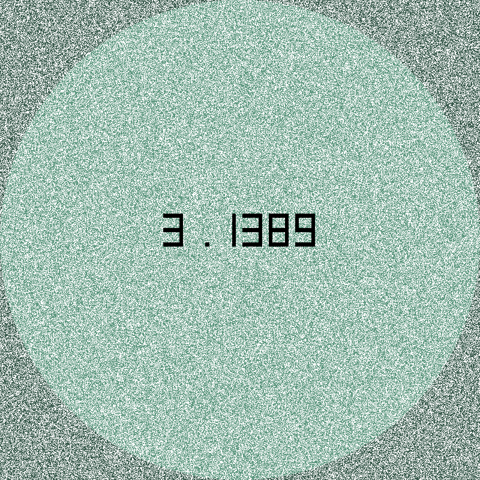
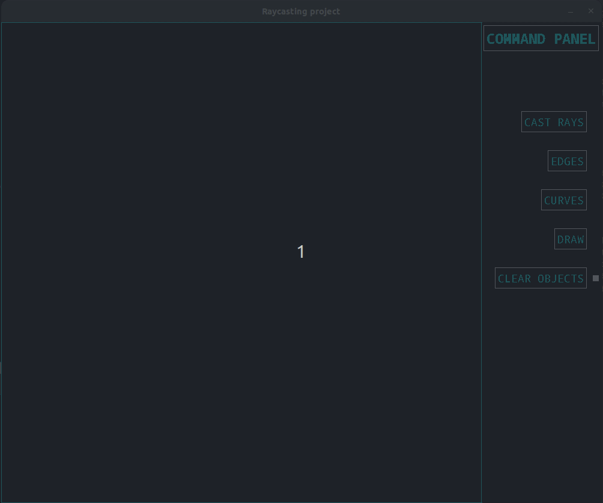
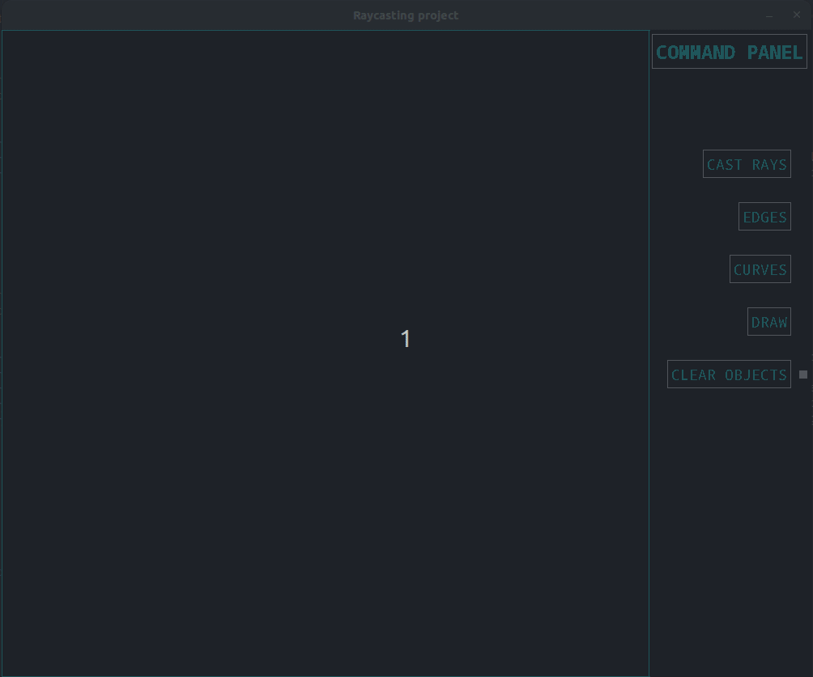

School projects
Modelisation of Monte Carlo's method in python
December 2021 (1 month, solo work)
- Computation of pi's approximation using Monte Carlo's method.
- Generation of an animated image (GIF) showing the simulation, using .ppm images format (each pixel is given an RGB code). The writing of each approximation is done with a 7-segment display for each digit.
- This project coded from scratch helped me work on optimization using various data structures (dictionnary, iterators, tables, etc).

Library for graphical interfaces in C
May 2022 (3 weeks, teamwork)
- Library coded entirely in C, similar to tkinter in python. Can be used to build simple games or applications.
- Uses the concept of widgets (buttons, frames, toplevels) and geometry managers to place elements on the screen. The Library handles the addition of new types of widgets or geometry managers by the user.
- This project enabled me to manipulate many aspects of programmation such as event programming or polymorphism in typedef structures (used for object-oriented programming). It really helped me enhance my level in C as a huge part of the project consisted in debugging, finding memory errors and leaks and optimizing the code to gain fluidity when moving the top levels, etc...


Personal projects
This website !
Since June 2022
- Small website built from scratch to present my CV, my projects until now.
- First step into the web programming world. I learned the very basics of HTML, CSS and a little bit of Javascript (essentially for the menu, the translations between French and English).
- This project is in constant amelioration as I'm learning by myself when I find time. I hope you enjoy it !
Raycaster in C (using the SDL2 library)
August 2022 - September 2022
- Small graphical interface built from scratch allowing the user to cast light (rays) on edges and curves.
- The user can draw curves by placing points on the screen. Each fragment drawn correspond to a Bézier curve which is connecter to the following curve with a C² junction. Therefore, the global curve (made of all the fragments) drown actually represents a spline.
- The user can also move the curve as he wants by sliding the white points (see examples below).
- The number of rays displayed in the screen can be set up to 3000 using only edges, and up to 250 using Bézier curves.
- This project allowed me to apply directly my mathematical knowledge (regarding geometry modeling) to a concrete project. It allowed me to work again on evenemential programming, optimization and other aspects of programming.

